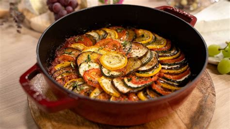

Volver
Ingredientes (4 personas)
| Producto |
Cantidad |
| Berenjena | 500 g |
| Calabacín | 375 g |
| AOVE | 125 ml |
| Cebolla | 2 |
| Pimiento rojo | 1 |
| Dientes de ajo | 5 |
| Tomate | 750 g |
| Perejil | al gusto |
| Tomillo | al gusto |
| Albahaca | al gusto |
| Sal | al gusto |
| Pimienta negra molida | al gusto |

Elaboración
- Cortar la berenjena en rodajas y ponerla en un cuenco con sal durante 30 minutos para que pierda amargor.
- Picar la cebolla en tiras finas, el pimiento en trozos y el calabacín en rodajas (y en cuartos si son grandes).
- En una cacerola, sofreír la cebolla con aceite durante 5 minutos. Añadir el pimiento y 3 dientes de ajo enteros y cocinar 7 minutos más. Salpimentar y reservar en una bandeja.
- Añadir aceite y cocinar la berenjena 6–7 minutos por cada lado. Pasar a la bandeja.
- Cocinar el calabacín 5 minutos y añadirlo al resto de las verduras.
- En la cacerola, sofreír los tomates pelados y en cubos junto con las hierbas frescas y los 2 dientes de ajo restantes, aplastando para crear una salsa.
- Añadir las verduras reservadas y mezclar con cuidado. Cocinar 10 minutos a fuego medio con tapa.
- Destapar y dejar cocinar 20 minutos más a fuego bajo.
- Rectificar de sal y servir caliente o templado.